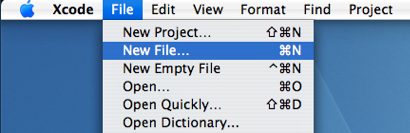
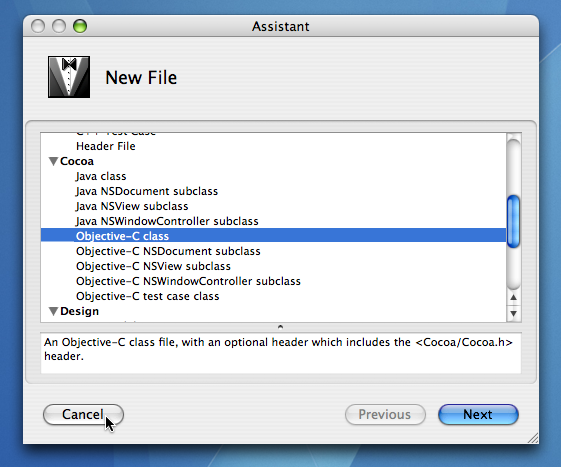
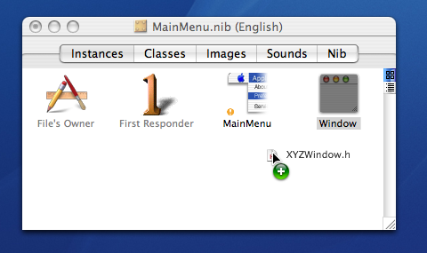
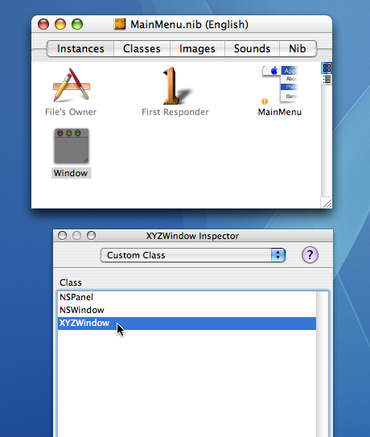

Q: How can I create a custom window in Interface Builder?A: Create a subclass of NSWindow. Drag the header file for this class into a nib file in Interface Builder. You can now change the class of any window in that nib file by merely selecting it and then changing its "Custom Class" in the Inspector. How it Works: When the nib file is loaded, this window's isa pointer will be set to refer to the custom class rather than the usual NSWindow. All method lookup will now be done beginning with this custom class. IMPORTANT: Be aware that in many cases, this work to subclass and create a custom window may be unnecessary. NSWindow is a good example of a Cocoa class designed to work closely with a delegate. In addition, it posts notifications. Check first to see if what you wish to do can be handled by implementing delegate methods and/or responding to notifications. If it cannot, then by all means, go ahead and subclass. To further illustrate by means of an example, you could create a custom window in your MainMenu.nib file by using the following three steps. Step 1: First, in Xcode, create a custom subclass of NSWindow . Let's assume the class name is "XYZWindow". Figures 1 & 2 show how to specifiy creating an Objective-C class. Name the .m file "XYZWindow.mXYZWindow.h Figure 1: Create a new file in Xcode.  Figure 2: Specify that you want to create a new Objective-C class.  Step 2: Drag the headerfile, XYZWindow.hMainMenu.nib file in Interface Builder as shown in Figure 3. As an alternative to using drag and drop, you could select "Read Files ..." from the "Classes" menu in Interface Builder and explicitly choose "XYZWindow.h Figure 3: Drag the .h file from the Finder of Xcode into the nib file.  Step 3: Select the Window in the MainMenu.nib, choose "Show Inspector" and select "Custom Class" from the popup button. Change the class from NSWindow to "XYZWindow" by simply selecting it in the list. Figure 4: With the window instance selected in Interface Builder, choose your custom subclass in the Inspector.  Note: This technique works equally well with an NSPanel or a custom NSView. Just drag out an NSPanel or the "Custom View" from Interface Builder's palette window and change the class name as above. Document Revision History| Date | Notes |
|---|
| 2007-03-21 | First Version |
Posted: 2007-03-21
|